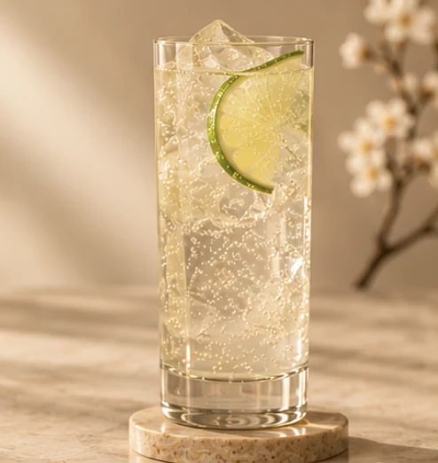
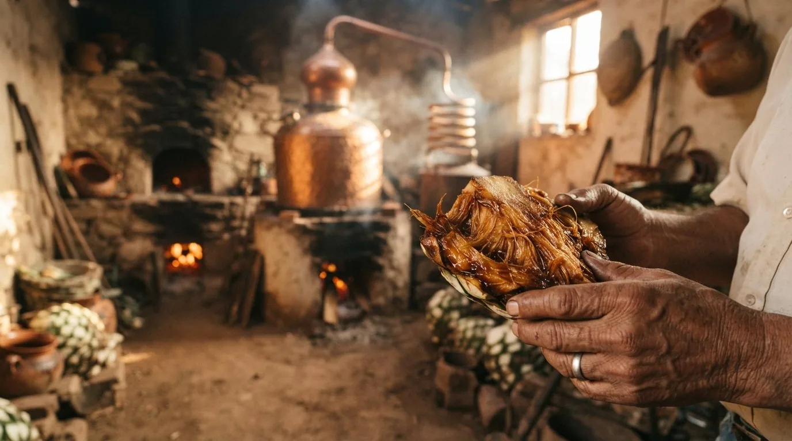
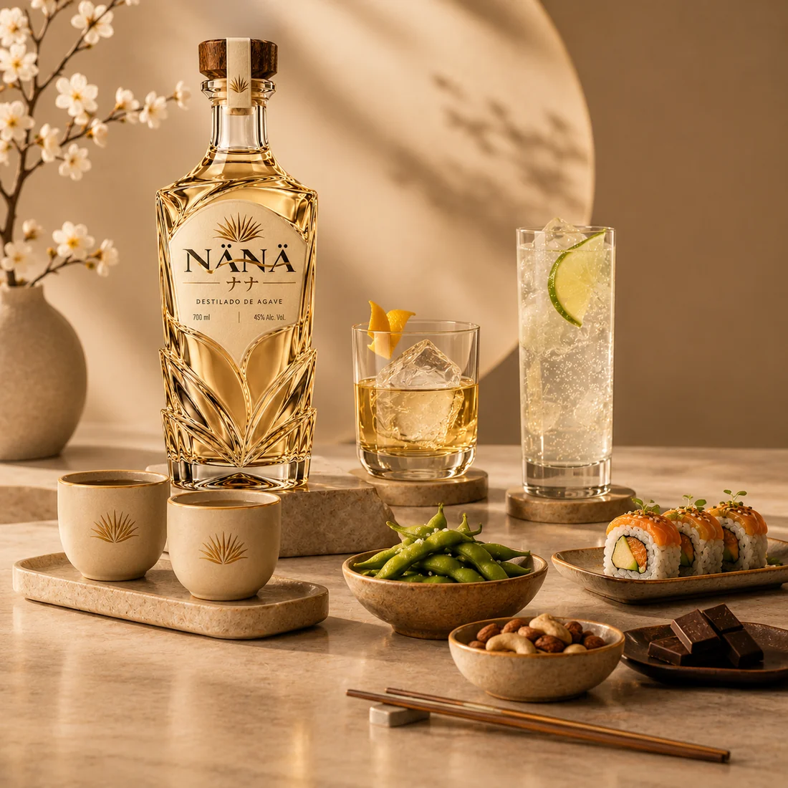
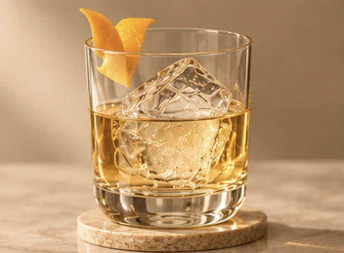
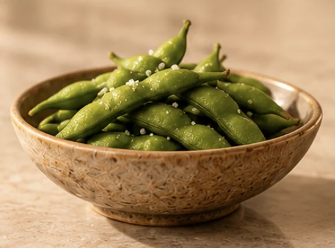
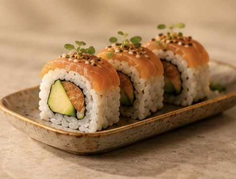
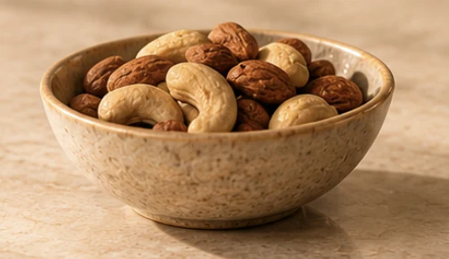
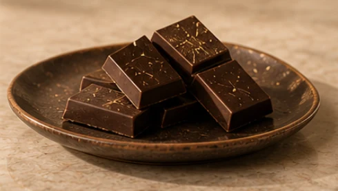

ソーダ割り
NÄNÄ Sodawari
NÄNÄ, agua mineral, hielo y un toque de limón.ミネラルウォーターと氷で割り、レモンをひとたらし。
Destilado de agaveアガベ蒸留酒
En Japón la venta y el consumo de alcohol están prohibidos a menores de 20 años.日本では20歳未満の飲酒・酒類の購入は法律で禁止されています。
Lo sentimos, este sitio es solo para mayores de 20 años.申し訳ありません。20歳未満の方はご利用いただけません。
Destilado 100% de agave100％アガベ蒸留酒 · Querétaro 東京
De Querétaro a Tokio, hecho a mano.ケレタロから東京へ、手づくりで。
Una edición limitada de 2,000 botellas para las noches de Tokio.東京の夜のための、2,000本の限定エディション。

01La botellaボトル
Con una cinta que lleva el agave dorado.金のアガベをあしらった帯付き。
Dos escrituras, una sola identidad.ふたつの文字、ひとつのアイデンティティ。
Las hojas del agave, en relieve en la base.底にアガベの葉のレリーフ。
El formato de los bares e izakayas de Tokio.東京のバーや居酒屋で定番のサイズ。
Precio en Tokio東京での価格
¥9,745
700 ml · incluye impuesto al consumo (10%).700ml・消費税10％込み。
Paga como pagas en Japón日本のお支払い方法に対応
Importadores: carta de crédito o transferencia SWIFT, en dólares. Tienda en línea: nana-agave.jp輸入者：信用状またはSWIFT送金（米ドル建て）。オンラインストア：nana-agave.jp
02El viaje旅

Agave del semidesierto de Querétaro.ケレタロの半砂漠で育つアガベ。

Cocido y destilado a mano, en lotes pequeños.小さなロットで、手で蒸し、手で蒸留。

Llega a Tokio lista para compartir.分かち合うために、東京の食卓へ。
03El ritualひととき
Todo en un mismo paquete, listo para regalar.贈り物にそのまま使える、ひとつのセット。
04Cómo disfrutarlo楽しみ方

ソーダ割り
NÄNÄ, agua mineral, hielo y un toque de limón.ミネラルウォーターと氷で割り、レモンをひとたらし。

オン・ザ・ロック
Un hielo grande y piel de naranja.大きな氷と、オレンジの皮を添えて。
Acompáñalo con合わせるなら

Edamames枝豆
Sushi寿司
Frutos secosナッツ
Chocolate amargoビターチョコ
05Tokio東京
En bares, izakayas y tiendas especializadas, y también en línea.バー、居酒屋、専門店、そしてオンラインで。
Comparte tu copa conグラスをシェア #ナナの一杯
06Identidadアイデンティティ
NÄNÄ
Origen, cuidado y raíz: la tierra que nos da identidad.起源、慈しみ、ルーツ。私たちを形づくる大地。
ナナ
El diálogo con Japón, sin perder la esencia mexicana.メキシコらしさを保ちながら、日本と対話する。
七
Nana también es el siete: número de buena suerte.「なな」は縁起の良い数字でもあります。
“Nuestra esencia es mexicana; Japón nos inspira a expresarla de otra manera.”「本質はメキシコに。日本は、それを別のかたちで表すインスピレーション。」
07Contactoお問い合わせ
Sube tu foto conハッシュタグ #ナナの一杯 o comparte NÄNÄ con un clic. で投稿、またはワンクリックでシェア。
Recomienda y gana紹介特典
¿Tu bar favorito aún no tiene NÄNÄ? Recomiéndalo: si hace su pedido, te regalamos una miniatura de 200 ml.お気に入りのバーにNÄNÄを紹介してください。ご注文が成立したら、200mlのミニボトルをプレゼントします。